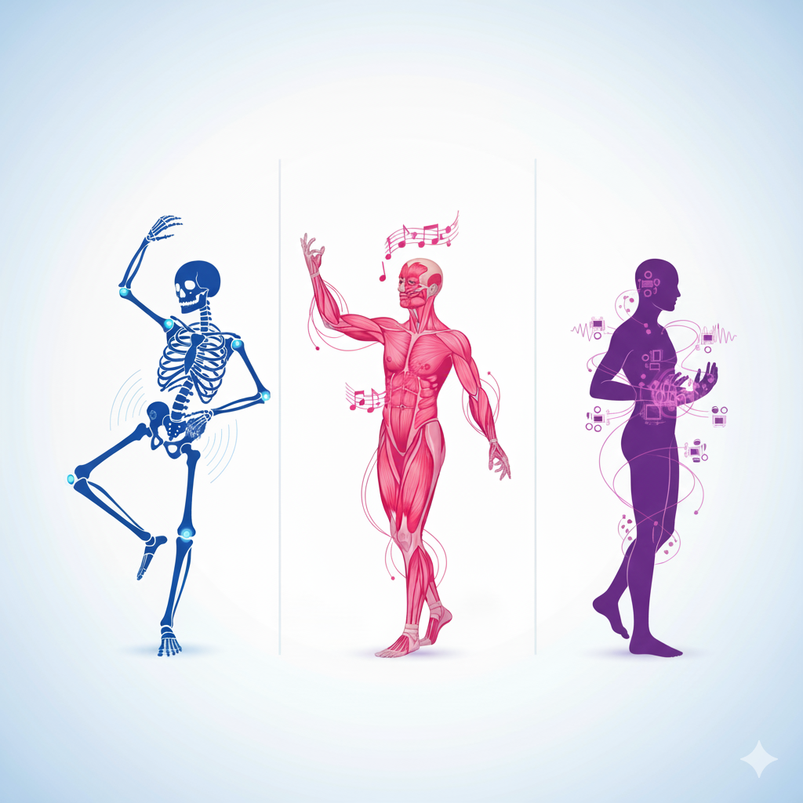
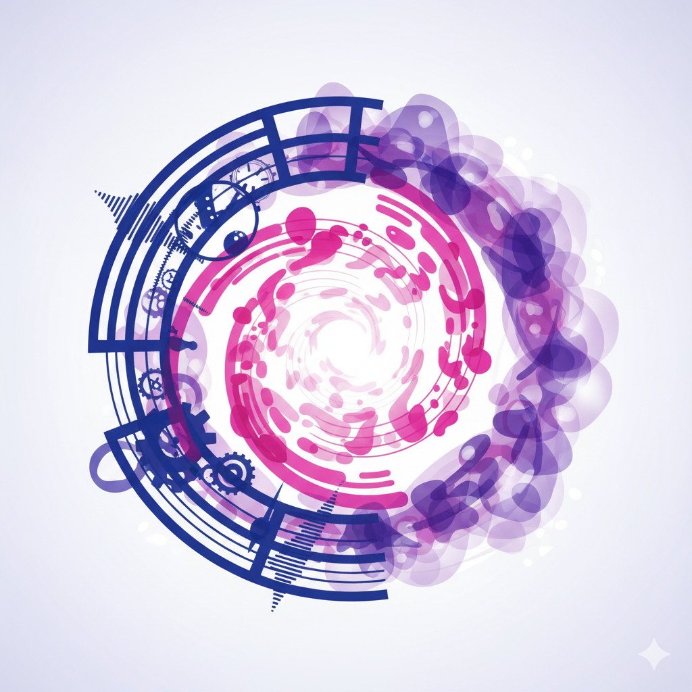
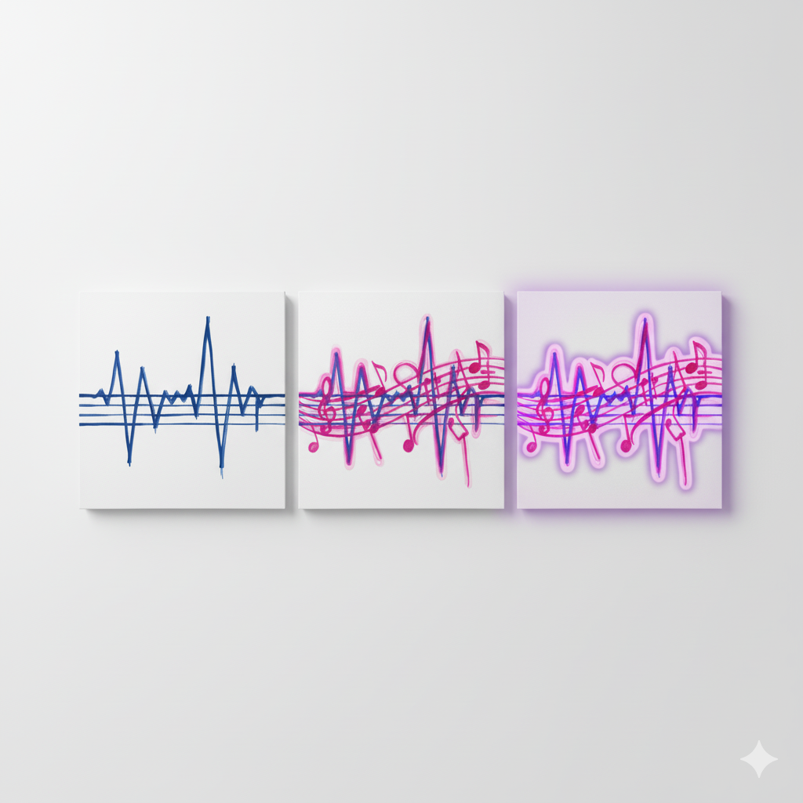
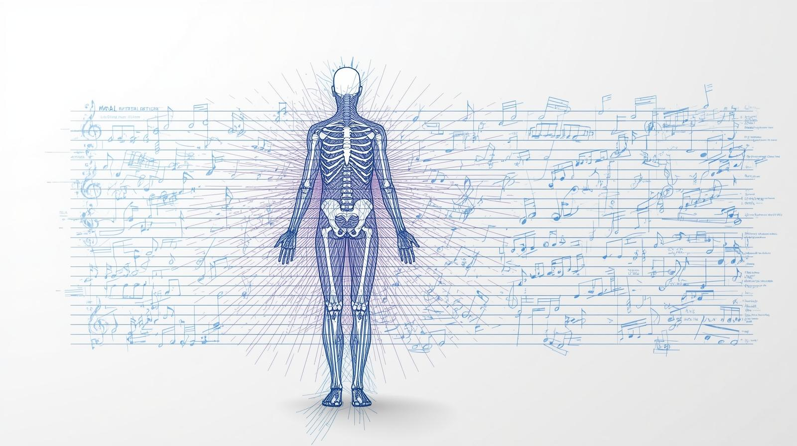
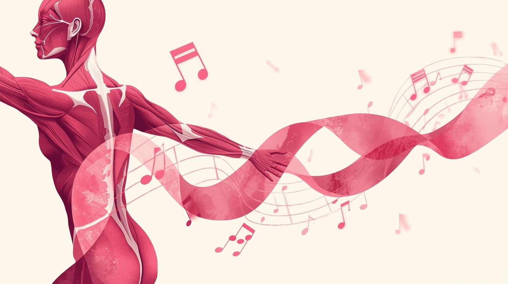
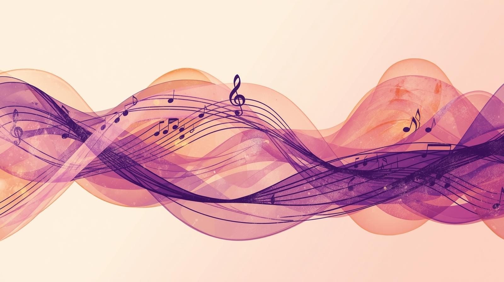

Analogía: Cuerpo Humano

Ritmo es el esqueleto que sostiene. Melodía son los músculos que dan movimiento. Armonía es la piel que unifica todo.
Ritmo • Melodía • Armonía — explicado fácil y visual
Así como un cuerpo tiene esqueleto, músculos y piel, la música tiene ritmo, melodía y armonía. También como un cuadro: lienzo, boceto y colores que juntos forman una obra completa.


Ritmo es el esqueleto que sostiene. Melodía son los músculos que dan movimiento. Armonía es la piel que unifica todo.

El ritmo es el lienzo que da estructura, la melodía es el boceto que marca la línea principal, y la armonía son los colores que completan la obra.

El ritmo es la base de la música, la organización del pulso y los acentos en el tiempo. Es lo que nos hace marcar el compás con el pie o mover la cabeza al escuchar una canción.

La melodía es la sucesión de notas que reconocemos y tarareamos. Es la voz de la música, la línea que cuenta una historia a través de los sonidos.

La armonía son los sonidos simultáneos que acompañan la melodía. Es el color de la música, la combinación que da profundidad y emoción.